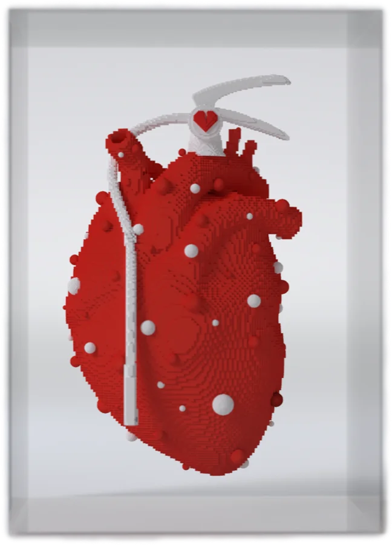

Artist / Creative Director
I make
ideas
visible.
Adáramátì Shògo is a multidisciplinary artist and Creative Director working across art, culture, identity, technology and experience. Two practices, connected by one instinct: to turn complex ideas into work with presence.

Heartburn